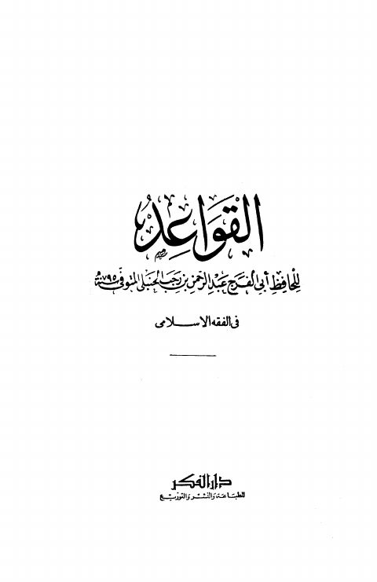

Downloads need an internet connection.
القواعد للحافظ لأبي الفرج في الفقه الإسلامي
Authors: ابن رجب الحنبلي
Publishers: دار الفكر العربي
**▫️ العنوان: القواعد للحافظ لأبي الفرج في الفقه الإسلامي** ▪️ المؤلف: #عبد_الرحمن_بن_أحمد_بن_رجب_الحنبلي ▫️ الناشر: #دار_الفكر_للطباعة_والنشر_والتوزيع ▪️ بلد النشر: القاهرة، #مصر ▫️ الطبعة: 1 ▪️ عدد الأجزاء: 1 ▫️ الصفحات: 454 ▪️ نوع الوعاء: #كتاب ▫️ التصنيف الرئيسي: #الفقه_وأصوله ▪️ التصنيف الفرعي: #القواعد_الفقهية ۪